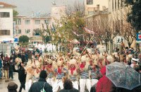

Izvlačenje drugog kola nagradne igre novog lista održat će se u subotu, 5. Veljače
 U vrijeme karnevala Matulji imaju istaknuto mjesto. Naime, dok se Rijeka diči svojom velikom karnevalskom povorkom, Matulji dan prije običavaju organizirati nadaleko poznatu zvončarsku smotru, koja zapravo predstavlja najstarije krabuljne običaje, jer tradicija zvončara njeguje se oduvijek. Ove subote, 5. veljače, održat će se jubilarna 10. po redu smotra zvončara i opet će biti zvonjave, šarenila, veselja, ića i pića, a Matuljima će prodefilirati više od 700 zvončara: oni Brežanski, Brgujski, Halubajski, Munski, Zametski, Žejanski, Frlanski, Grobnički dondolaši, Kanal-Nova Gorica, Zvončari Korensko, Sovinjski pusti – Buzet, Škoromati iz Podrgada, čakovečki Veseli Međimurci i mnogi drugi.
Matuljska zvončarska smotra pokrenuta je 1994. godine na inicijativu pokojne Borke Kalčić Jugo, a originalna ideja je pretpostavljala okupljanje svih 10 zvončarskih skupina na području cijele Općine Matulji, pojašnjava predsjednica Turističke zajednice Općine Matulji Marijana Kalčić.
Jedine dvije zvončarske skupine s matuljskog područja koji baš nikada ne napuštaju svoja sela i ne dolaze u Matulje su Rukavački i Zvonejski zvončari, koji poštujući najstarije tradicije obilaze samo lokalne autohtone puteve. Tradicionalno, kao i svake godine, u Matulje dolaze i dvije skupine slovenskih zvončara iz Ilirske Bistrice, koja je zapravo Matuljima susjedna općina iako je u drugoj državi. Osim zvončara s matuljskog i riječkog područja dolaze i gosti iz drugih krajeva Hrvatske, ali i Italije te, kao što je spomenuto, Slovenije. Osim samih zvončara nastupit će i limene glazbe "Spinčići" i "Goriška brda," rogisti KD "Lane" iz Opatije, KUD Barban iz Barbana, KUD "Učka" iz Matulja, klape "Zvonejski kanturi," te matuljski Pusni odbor zajedno s maškaranom skupinom iz Matulja, poznatijom kao "Zijat, sost, tancat i pit".
Cijeli šušur počinje već od 11 sati kada su prvo na redu glazba i nastupi folklornih društava te primanje maškara kod načelnika matuljske Općine, što će se održati točno u podne. U 13 sati započinje centralni događaj zvončarske smotre koji pak otvaraju najmlađi stanovnici matulja: povorka maskirane djece Dječjeg vrtića Matulji i one starije matuljske maškare, da bi potom središnju ulicu Matulja zauzele brojne zvončarske skupine. Tu negdje, između svega toga, održat će se i izvlačenje drugog kola nagradne igre našeg lista "Samo, imati sreće!". Publiku će zabavljati i glazbene grupe "Coctails Band" te "Maestral," malo komedije će ponuditi Mario i Davor ili ti "Bele udovice," a voditeljica programa je voditeljica s Primorskog radija Irena Grdinić. Naravno, za sve okupljene bit će i "mirisnih" štandova s jelom i pićem, gdje tradicionalno sudjeluju i lovci, a matuljske "općine-prijatelji" predstavit će svoje autohtone proizviode i promidžbene materijale.
Iva Vlašimsky
February 2, 2005
© 2005 Novi List